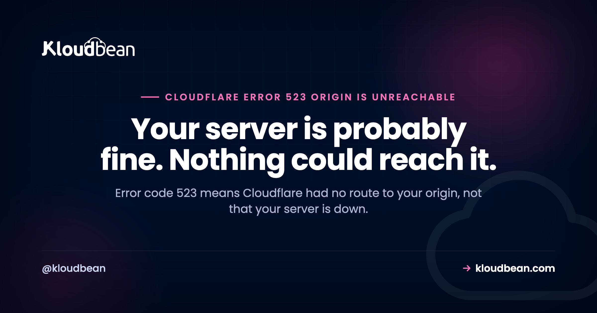

Cloudflare Error Code 523: Origin Is Unreachable

Error code 523 is the one people debug in completely the wrong place. The instinct on any 5xx is to check whether the web server is running, and with 523 that's wasted effort, because your server was never asked anything. Cloudflare is reporting that it couldn't find a path to your origin's address at all. The server can be perfectly healthy, serving requests to anyone who reaches it directly, and still produce 523 for every visitor.
Cloudflare could not contact your origin because something between the two has no route to your origin's IP address. Per Cloudflare's documentation the usual causes are a wrong origin IP in your A or AAAA record, and network routing problems between the origin and Cloudflare. In AWS specifically, a very common cause is an overly broad route such as 172.0.0.0/8 in a VPC route table, because Cloudflare uses public addresses in 172.64.0.0/13 and that broad route swallows them. Restarting your web server will not help.
523 is a routing failure, not a server failure
Cloudflare's origin errors get progressively earlier as the numbers climb, and once you see the sequence the diagnosis picks itself.
| Code | What happened | What it proves |
|---|---|---|
| 521 Web server is down | Something answered and refused | The path works. A service or firewall said no. |
| 522 Connection timed out | The address was reachable, nothing replied | Packets got there and vanished, or nothing was listening. |
| 523 Origin is unreachable | There was no path to try | Routing. Nothing ever left for your server. |
That last row is the useful part. A refusal proves a route exists. A timeout proves a route exists. 523 proves one doesn't, which is why it belongs to your network configuration and your DNS record rather than your application. The 522 guide covers the refused-versus-ignored distinction in depth, and it's worth reading if you're not certain which code you actually have.
The 172 trap, and why it catches careful people
This is the cause worth knowing before any other, because Cloudflare names it as common in AWS environments and because the reasoning behind the mistake is so reasonable.
Almost everyone treats an address starting 172. as private. That belief is nearly right and expensively wrong. RFC 1918 reserves three private ranges, and the 172 one is 172.16.0.0/12, which covers 172.16.0.0 through 172.31.255.255. That is a slice of 172, not all of it.
Cloudflare uses public address space in 172.64.0.0/13, spanning 172.64.0.0 through 172.71.255.255. Public, routable, and nowhere near the private block.
Now consider a VPC route table containing 172.0.0.0/8 pointed at a private destination, written by someone who wanted to cover "the 172 private range" in one line. That prefix covers every address from 172.0.0.0 to 172.255.255.255, which includes the private block and Cloudflare's public range. Return traffic toward Cloudflare gets handed to a private next hop and disappears. Cloudflare sees no path back and reports 523.
| Prefix | Covers | What it is |
|---|---|---|
172.16.0.0/12 | 172.16.0.0 to 172.31.255.255 | Private, per RFC 1918 |
172.64.0.0/13 | 172.64.0.0 to 172.71.255.255 | Public, used by Cloudflare |
172.0.0.0/8 | 172.0.0.0 to 172.255.255.255 | Both of the above, which is the bug |
The fix Cloudflare documents is to stop sending 172.64.0.0/13 toward a private destination, adding a more specific route for it to your Internet Gateway if you need one. More specific prefixes win, so that entry overrides the broad one without your having to unpick the original rule.
Worth saying plainly: if this is your cause, no amount of work on the server finds it. The server is healthy. The packets are being posted to the wrong address by a rule two layers away. This generalises past AWS too. Any route table, any transit gateway, any on-premises firewall with a hand-written 172 summary route can do the same thing.
Check the address in your DNS record still exists
The most mundane 523 and the easiest to rule out. Cloudflare connects to whatever address your A or AAAA record holds. Rebuild a server, resize an instance, migrate between providers, or let a dynamic address lapse, and that value changes while the record sits there pointing at nothing.
Compare the record against the address your provider currently shows for the machine:
# What Cloudflare will try to reach
dig +short example.com @1.1.1.1
# Is anything alive there at all, bypassing Cloudflare?
curl -sS -o /dev/null -w "%{http_code}\n" --max-time 15 \
--resolve example.com:443:203.0.113.10 https://example.com/One nuance that costs people time: check the AAAA record too, not just the A record. A stale or wrong IPv6 address will be attempted, and an origin that has no working IPv6 path produces exactly this error while the IPv4 address beside it is perfectly fine. If you don't serve IPv6 at the origin, the AAAA record should not be there.
This is also where 523 gets confused with DNS failures, and the distinction is worth holding onto. If the name doesn't resolve at all, that's a different layer entirely, covered in ERR_NAME_NOT_RESOLVED and DNS explained. With 523 the name resolved fine. The address it produced is the problem.
Prove it is routing, rather than assuming
Cloudflare asks for one specific artefact when you open a ticket about this, and gathering it first is worth doing regardless, because it usually answers the question before anyone replies.
They want an MTR or traceroute from your origin toward a Cloudflare IP address that had been connecting to you before the problem started, which you identify from your own web server logs. Note the direction: from your origin outward, not from your laptop. The return path is the one that breaks in the route-table case, and only a trace from the origin shows it.
# Find a Cloudflare address that was reaching you (nginx)
awk '{print $1}' /var/log/nginx/access.log | sort -u | grep -E '^(172\.6[4-9]|172\.7[01]|104\.1[6-9])\.' | head
# Then trace back toward it from the origin
mtr -rwc 20 172.64.0.1A trace that dies at the first private hop, or never leaves your own subnet, is the route-table problem confirmed. A trace that reaches Cloudflare's network cleanly points you back at the DNS record or at a firewall, which is a different investigation.
The other realistic causes
A firewall dropping outbound traffic to Cloudflare. Less common than the inbound version but real, particularly in locked-down environments with egress filtering. If the origin cannot complete a connection outward to Cloudflare's ranges, the effect looks like a routing failure because functionally it is one.
Your origin sits behind NAT with no path back. A private-only instance with no Internet Gateway route, or a NAT gateway that has been removed or misconfigured. Cloudflare needs a publicly routable origin address unless you use a tunnel.
The origin moved but only some records were updated. Multiple hostnames, a mix of proxied and unproxied records, or a staging record left behind. Check every record that resolves to origin infrastructure, not just the apex.
A genuine transit problem between networks. Occasionally the route really is broken somewhere outside your control. The MTR is what distinguishes this from a self-inflicted one, and it's also what your provider will ask for.
The hosting side of cloudflare Error Code 523
Most 523s are not something a host can fix for you, and it's worth being blunt about that. A cloud route table lives in your account. A DNS record lives at whoever manages your nameservers. An egress firewall rule is your policy. None of those are reachable from a hosting platform, and a page implying otherwise is selling rather than helping.
The narrow thing infrastructure genuinely contributes is certainty about your origin's current address, which is exactly what the most mundane version of this error turns on. On Kloudbean the server's current address and health sit in the same dashboard, so confirming that your DNS record matches the machine takes a glance rather than a hunt through a provider console. Free SSL issued and renewed, seven cloud providers, and free migration assistance if you're moving something already running. That's the honest extent of it for this particular error.
The boundary stays where it always is. Server, stack, TLS, backups and patching sit with the platform. Your DNS records, your network topology, and your Cloudflare configuration remain yours. If you're designing that topology, what a VPC is covers the private networking concepts the route-table problem lives inside.
When cloudflare Error Code 523 is not the only issue
Start with the Cloudflare 5xx error codes overview if you're not sure which number you have. The siblings, in the order the failure happens: 521 web server is down when something refuses, 522 connection timed out when nothing answers, 520 when the origin replies with something unusable, and 525 SSL handshake failed when the connection works and TLS does not. On the naming layer below, ERR_NAME_NOT_RESOLVED and DNS explained. And for the private networking that route tables belong to, what is a VPC.
Fewer mysteries on the next deploy.
Build logs stream live in the console, deployment history keeps what happened, and the logs viewer separates app errors from web requests, so a failed start is a five-minute read rather than a guessing game.
- ✓ Live build logs
- ✓ Deployment history
- ✓ Logs viewer
- ✓ Managed process restarts
- ✓ Automatic backups
- ✓ Git deploy
FAQ
What does Cloudflare error code 523 mean?
It means Cloudflare could not contact your origin web server because something between them has no route to your origin's IP address. It is a routing failure rather than a server failure, so your web server can be running perfectly and still produce 523 for every visitor. Nothing ever reached it to be answered.
What is the difference between error 522 and error 523?
522 means the address was reachable but nothing completed the connection, so packets arrived and were dropped or ignored. 523 means there was no path to the address at all, so nothing was ever sent. A timeout proves a route exists. Unreachable proves one does not, which points at route tables and DNS records rather than firewalls and capacity.
Why does a 172.0.0.0/8 route cause a 523?
Because not all of 172 is private. RFC 1918 reserves 172.16.0.0/12, while Cloudflare uses public addresses in 172.64.0.0/13. A route for 172.0.0.0/8 covers both, so traffic intended for Cloudflare gets handed to a private next hop and disappears. Cloudflare documents this as a common cause in AWS environments.
How do I fix the AWS route table version of this?
Stop sending 172.64.0.0/13 toward a private destination. Cloudflare's documented remedy is to add a more specific route for 172.64.0.0/13 to your Internet Gateway if you need one. More specific prefixes take precedence, so that entry overrides the broad rule without your having to unpick the original.
Will restarting my web server fix a 523?
No, and it is the most common wasted step. A 523 means Cloudflare never reached your server, so the state of the server is irrelevant to the outcome. Check the origin IP in your DNS record and your network routing instead. If the server genuinely were refusing connections you would be looking at a 521.
Can a wrong AAAA record cause a 523?
Yes, and it is easy to miss because the A record beside it looks fine. If an AAAA record points at an address with no working IPv6 path, that attempt fails while IPv4 would have succeeded. If your origin does not serve IPv6, the AAAA record should not exist at all.
What information does Cloudflare ask for?
An MTR or traceroute from your origin web server toward a Cloudflare IP address that had been connecting to you before the problem started, which you identify from your own web server logs. Note the direction is outward from the origin, because the return path is what breaks in the route-table case and only a trace from the origin reveals it.
Is 523 a DNS problem?
Not in the resolution sense. With a 523 the hostname resolved successfully and produced an address; the problem is that the address cannot be reached. If the name itself fails to resolve you get a different error entirely. The DNS involvement in a 523 is usually that the record holds an address which is stale or was never routable.